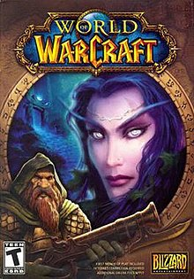

Pacific Rim is my favorite movie because I love Sci-Fi and when i first watch the movie I thought it was the best idea ever and is the only movie i can keep rewatching without getting bored
World of Warcraft is my favorite game because I started playing Runescape as a kid and once I found World of Warcraft it was to me a bigger and better version of Runescape, with interesting lore and beautiful design.
